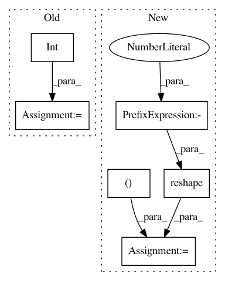

47c6377324b4906ed5e133011350c22d1f809466,scripts/gan/srgan/train_srgan.py,SubpixelBlock,hybrid_forward,#SubpixelBlock#Any#Any#,37
Before Change
x = self.conv(x)
x = x.transpose([0, 2, 3, 1])
batchsize,height,width,depth = x.shape
x = x.reshape((batchsize, height , width, 2, 2, int(depth / 4)))
x = x.transpose([0, 1,3,2,4,5])
x = x.reshape((batchsize, height * 2, width * 2, int(depth / 4)))
x = x.transpose([0, 3, 1, 2])
x = self.relu(x)
return x
After Change
def hybrid_forward(self, F, x, *args, **kwargs):
x = self.conv(x)
x = x.reshape((0, -4, -1, 4, 0, 0)) // bs, c // 4, h, w
x = x.reshape((0, 0, -4, 2, 2, 0, 0)) // bs, c // 4, 2, 2, h, w
x = x.transpose((0, 1, 2, 4, 3, 5)) // bs, c // 4, 2, h, 2, w
x = x.reshape((0, 0, -3, -3)) // bs, c // 4, h * 2, w * 2
x = self.relu(x)
return x
In pattern: SUPERPATTERN
Frequency: 3
Non-data size: 6
Instances
Project Name: dmlc/gluon-cv
Commit Name: 47c6377324b4906ed5e133011350c22d1f809466
Time: 2020-05-01
Author: cheungchih@gmail.com
File Name: scripts/gan/srgan/train_srgan.py
Class Name: SubpixelBlock
Method Name: hybrid_forward
Project Name: biolab/orange3
Commit Name: 5b58ab5c45be8923e5d74e3bc84101be1ad13066
Time: 2017-08-21
Author: ales.erjavec@fri.uni-lj.si
File Name: Orange/widgets/unsupervised/owmds.py
Class Name: OWMDS
Method Name: _setup_plot
Project Name: cornellius-gp/gpytorch
Commit Name: 3879bcde8d42c619c96b6483dba14a76a8e5f00b
Time: 2019-09-29
Author: kaw293@cornell.edu
File Name: gpytorch/utils/grid.py
Class Name:
Method Name: create_data_from_grid